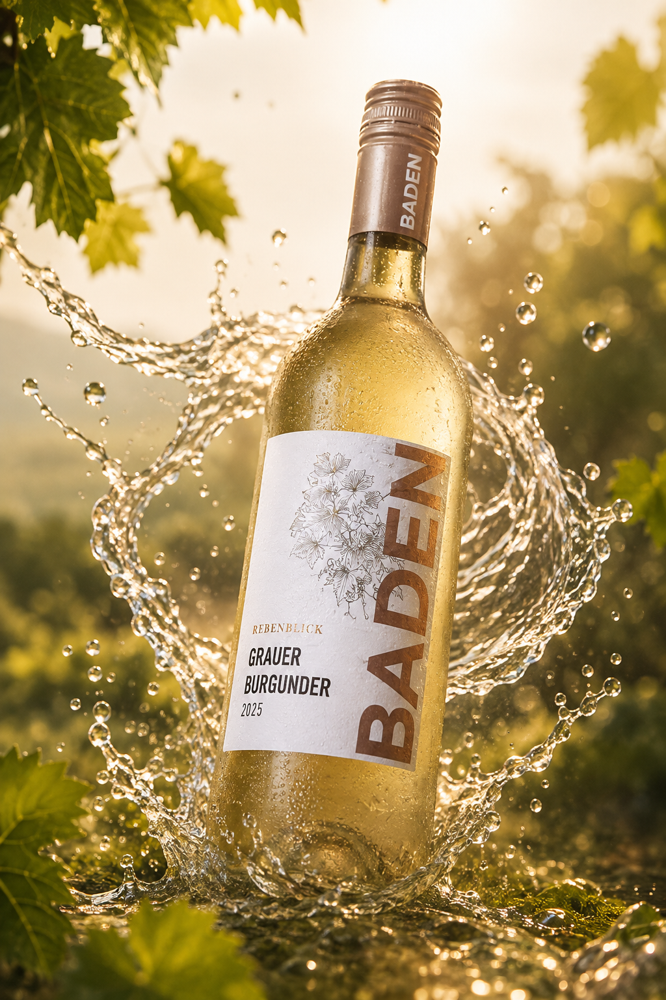
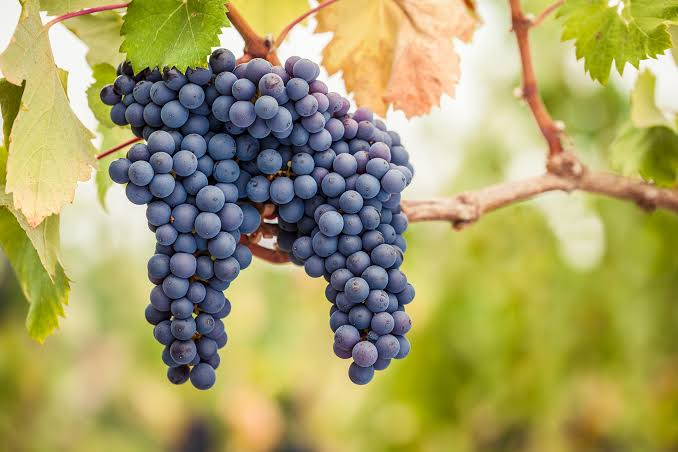
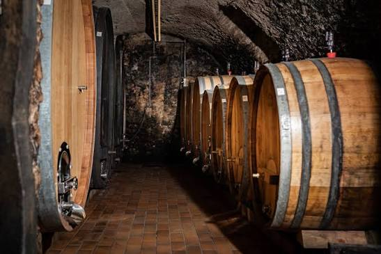
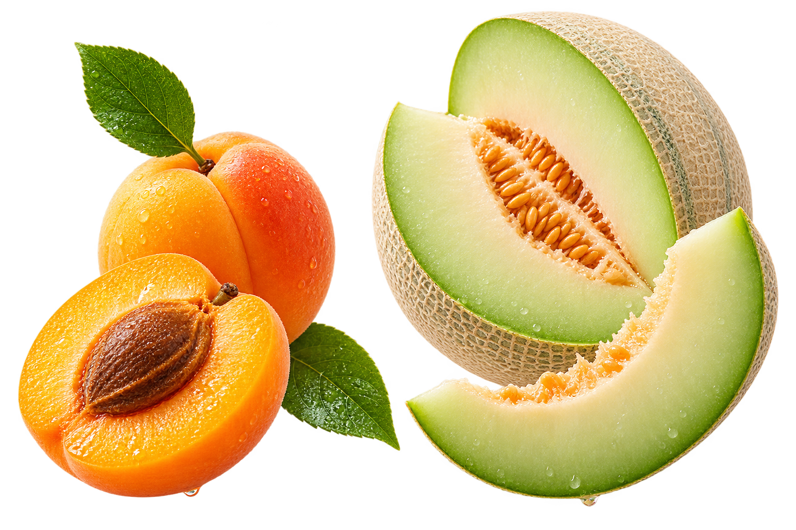

Rebenblick
Grauer Burgunder
Baden · 2025 · trocken

Wischen
01 · Herkunft
BADEN
01Eine der wärmsten Weinregionen Deutschlands
02Viel Sonne & mildes Klima
03Reife, aromatische Trauben

02 · Die Traube
GRAUBURGUNDER
International: Pinot Gris
Grau-rötliche Trauben
Fruchtig, mild & vielseitig
Sieht rötlich aus – ergibt Weißwein.

03 · Herstellung
VON DER TRAUBE
ZUM WEIN
Ernte
Pressung
Gärung
Reifung
Flasche
Hefe verwandelt den natürlichen Zucker in Alkohol.
≈ 6 MonateBei jungen Grauburgundern oft von der Lese im September bis zur Abfüllung im März.
04 · Geschmack
WIE SCHMECKT ER?

Aprikose
Honigmelone
Dezente Säure · trocken & fruchtig
05 · Wir probieren
JETZT SEID IHR DRAN.
01Riechen
02Probieren
03Schmecken
Findet ihr Aprikose oder Honigmelone wieder?

Zum Abschluss
DANKE FÜR EURE AUFMERKSAMKEIT.
Und Prost.